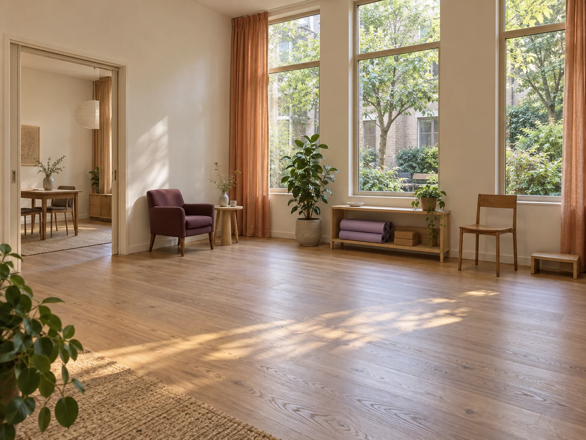

Session team
Time for the first conversation, activities already agreed and a focused review of questions.
The studio / Utrecht since 2020
Stridewell brings the conversation and movement room together. There is a place to sit, a place to ask and space to understand what comes next.

A local, appointment-led studio
Since 2020, our focus has been adults who want a clear conversation about movement and their ordinary routines. That might be time at home, getting around the neighbourhood or returning to an activity they value.
We explain what a session is for and leave the choice of next steps open to discussion. We do not sell a promised recovery date or a fixed number of visits.
A nine-person team
Six team members organise the one-to-one session work, two coordinators handle visit practicalities and one operations lead looks after the day-to-day running of the studio.
The team works in small, scheduled appointments. Session time is one-to-one, while the coordinators keep arrival questions separate from the session conversation.
Time for the first conversation, activities already agreed and a focused review of questions.
A point of contact for language, arrival, room questions and the practical shape of a visit.
The details of a welcoming reception and a consistent day-to-day studio experience.
The rooms
The described route from the entrance to reception, the conversation room, movement room and toilet is on one floor, without stairs.
Individual fit still needs checking. Ask about door dimensions, space around equipment, transfer support or anything specific to your visit before attending.
Arrival and access questions ↗A chair to settle into and a coordinator to discuss the practical plan. Quieter waiting can be requested for discussion.
A separate space for a first conversation or a focused review, with room to ask about bringing a companion.
Open floor space, an ordinary chair, mats and simple studio items for activities agreed in person.
A toilet on the same level. Specific access dimensions and support arrangements are not confirmed online.
A little preparation
Choose a session format and the practical things you would like to discuss. Make a take-along checklist, at your own pace.